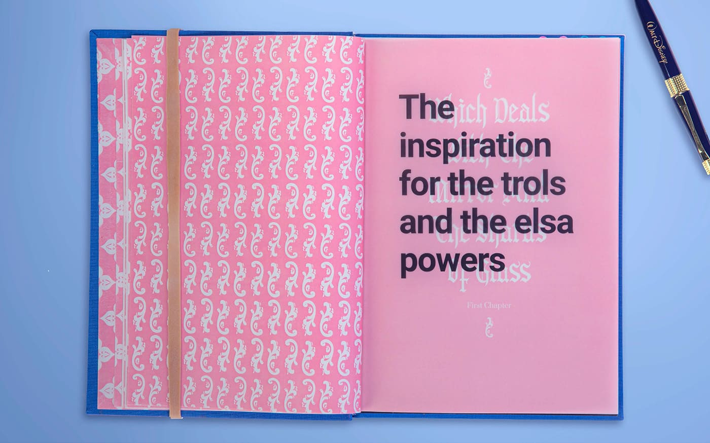
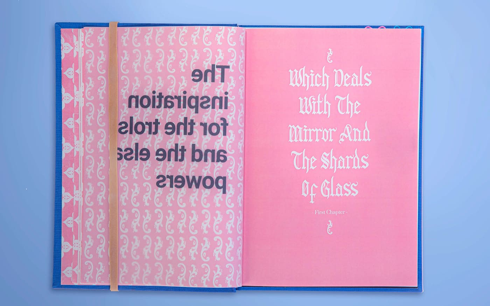
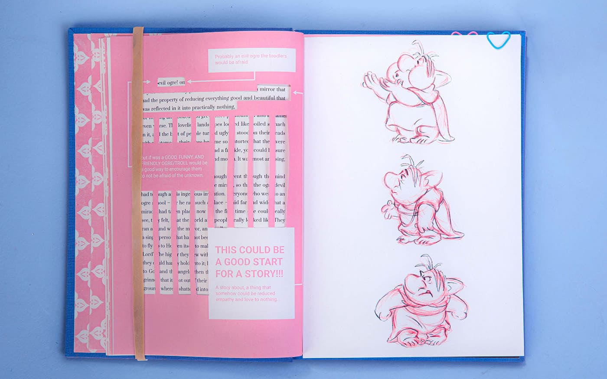
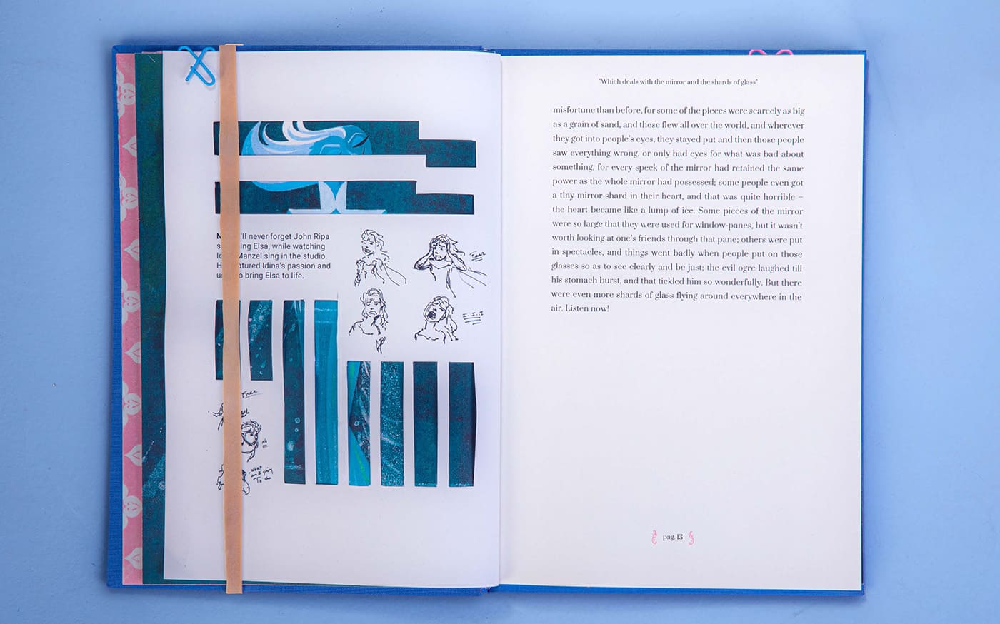
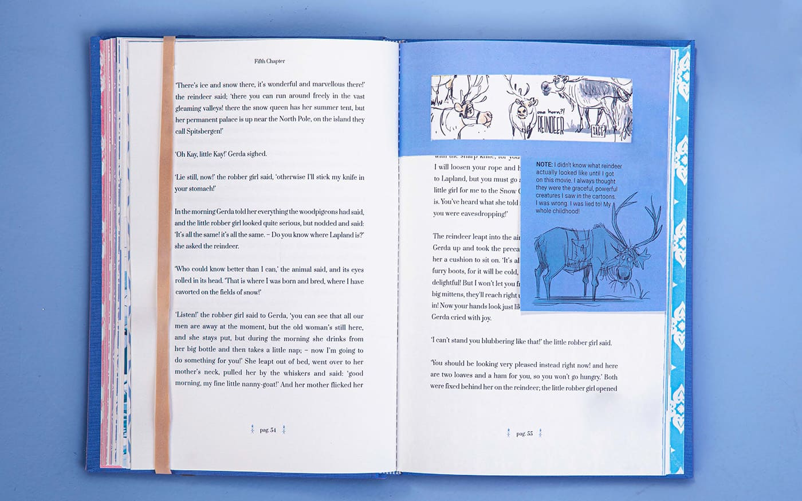
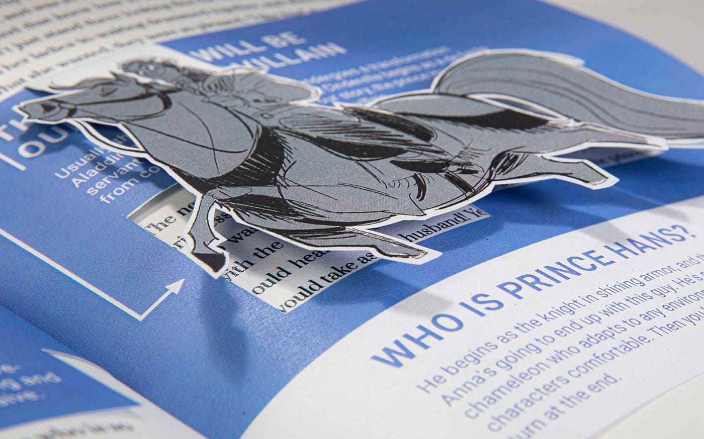

Fashion symbols turned into activism
100% Human Rights
100% Human Rights is a project that exposes the hidden atrocities behind the fashion industry, particularly the exploitation of the Uyghur Muslim minority in China. Subjected to torture, isolation, forced "re-education," and political brainwashing, many Uyghurs are enslaved in cotton fields, producing materials that end up in global supply chains. This project, a D&AD winner in collaboration with Google Fonts & HMCT, transforms everyday fashion symbols into a powerful tool for awareness and action.










